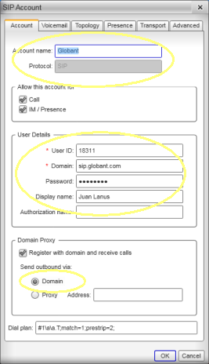
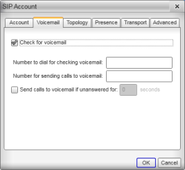
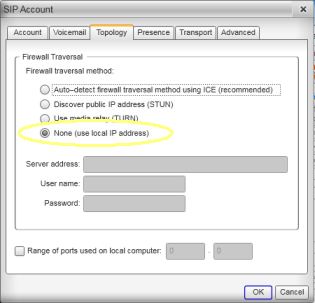
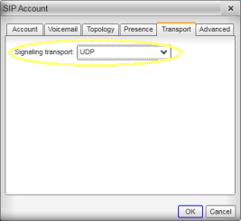
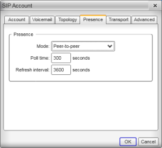
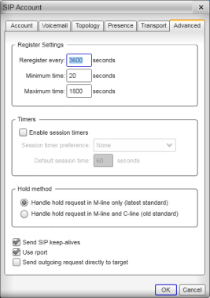

amaya
bin
jq.exe (command line JSON processor)
keytool.exe
mongo.cmd
C:\z\mongodb\bin\mongo.exe
mongoServiceInstall.cmd
C:\z\mongodb\bin\mongod.exe --config C:\data\cfg\mongod.cfg --install
mongoStart.cmd
C:\z\mongodb\bin\mongod.exe --dbpath C:\data\db
putty
mongodb
nodejs
python
StdDisclaimer.html
temp
tmp
UnxUtilsDist.html
usr (no: low quality UNIX tools)
vim
winmerge
2011 2012 2013 2014 2014.7z binabacus books doc (Git repo) mongoCourse moodledata putty_DB2.log putty_DB2_explain.log putty_SCOREENT.log putty_TSTDB2.cbl putty_TSTDB2.cbl~ reading reqjs uf webserver ZZZ_reading
     
C:\Users\juan.lanus>set ALLUSERSPROFILE=C:\ProgramData APPDATA=C:\Users\juan.lanus\AppData\Roaming CommonProgramFiles=C:\Program Files\Common Files CommonProgramFiles(x86)=C:\Program Files (x86)\Common Files CommonProgramW6432=C:\Program Files\Common Files COMPUTERNAME=GLB-D1984 ComSpec=C:\Windows\system32\cmd.exe FP_NO_HOST_CHECK=NO HOME=C:\Users\juan.lanus HOMEDRIVE=C: HOMEPATH=\Users\juan.lanus LOCALAPPDATA=C:\Users\juan.lanus\AppData\Local LOGONSERVER=\\ULISES NUMBER_OF_PROCESSORS=4 OS=Windows_NT Path=C:\z\bin;C:\Windows\system32;C:\Windows;C:\Windows\System32\Wbem;C:\Windows\System32\WindowsPow erShell\v1.0\;C:\Program Files (x86)\Git\cmd;C:\Program Files (x86)\Git\bin;C:\z\nodejs\;c:\Program Files (x86)\Microsoft SQL Server\100\Tools\Binn\;c:\Program Files\Microsoft SQL Server\100\Tools\Bin n\;c:\Program Files\Microsoft SQL Server\100\DTS\Binn\;C:\z\vim\vim74\;C:\Users\juan.lanus\AppData\R oaming\npm;C:\z\python PATHEXT=.COM;.EXE;.BAT;.CMD;.VBS;.VBE;.JS;.JSE;.WSF;.WSH;.MSC PROCESSOR_ARCHITECTURE=AMD64 PROCESSOR_IDENTIFIER=Intel64 Family 6 Model 37 Stepping 2, GenuineIntel PROCESSOR_LEVEL=6 PROCESSOR_REVISION=2502 ProgramData=C:\ProgramData ProgramFiles=C:\Program Files ProgramFiles(x86)=C:\Program Files (x86) ProgramW6432=C:\Program Files PROMPT=$P$G PSModulePath=C:\Windows\system32\WindowsPowerShell\v1.0\Modules\ PUBLIC=C:\Users\Public SESSIONNAME=Console SystemDrive=C: SystemRoot=C:\Windows TEMP=C:\Users\JUAN~1.LAN\AppData\Local\Temp TMP=C:\Users\JUAN~1.LAN\AppData\Local\Temp USERDNSDOMAIN=GLOBANT.COM USERDOMAIN=GLOBANT USERNAME=juan.lanus USERPROFILE=C:\Users\juan.lanus VBOX_INSTALL_PATH=C:\Program Files\Oracle\VirtualBox\ VS100COMNTOOLS=C:\Program Files (x86)\Microsoft Visual Studio 10.0\Common7\Tools\ windir=C:\Windows windows_tracing_flags=3 windows_tracing_logfile=C:\BVTBin\Tests\installpackage\csilogfile.log WORKDIR=C:\Users\juan.lanus